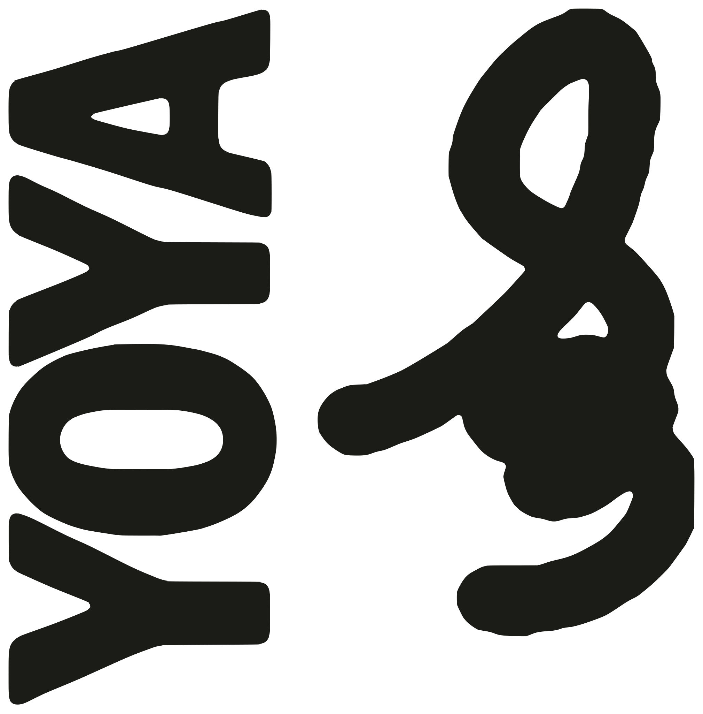

About
THIS IS MY LITTLE GALLERY我的小展厅
想看看我近期的创作与零碎想法，这里是最直接的窗口。
A direct place to check out my ongoing works and random thoughts.
关于我
About Me
我一直在和图像打交道。大部分时间，都在试着把脑海里流动的想象、片段画面，打磨成可以被看见的作品。习惯在不同媒介里来回摸索，不局限单一的表达形式，任由想法顺着直觉慢慢落地。
I work with visuals most days. Much of my time is spent turning fleeting imagery and fragments from my mind into tangible pieces. I like experimenting across different mediums, not locking myself into one single form, and letting ideas unfold intuitively.
喜好与探索
What I Explore
我始终对新鲜的表达保持好奇。顺着这份兴趣，陆续接触动画、绘画、摄影、声音创作以及 AI 工具，都只是浅尝摸索，不断尝试混搭出新的感受。比起专精某一项，我更享受跨界试错、自由实验的过程。
I’m endlessly curious about new ways to create. This curiosity leads me to dabble in animation, drawing, photography, sound work and AI tools. I don’t aim for mastery in any one field; what I enjoy most is cross-medium trial and free experimentation.
关于这个展厅
About This Gallery
这里存放的都是我随手捣鼓出来的零碎习作、小实验和半成品。很多想法都源于各路创作者的启发，算是一路学习攒下的小记录。没有宏大的目标，单纯用来安放自己的产出，如果你能从中找到一点共鸣就很好。
This space holds my scattered sketches, small experiments and unfinished pieces. Many of these ideas are inspired by other creators, little notes I’ve collected along my learning journey. There’s no grand ambition here. It’s simply a place for my outputs. I’d be glad if something resonates with you.
来信交流
Write to Me
志同道合的朋友欢迎来聊聊创作、想法或是别的碎碎念。我会翻看消息，时间充裕的时候再回复。
Fellow creators are welcome to talk about art, ideas or anything else. I read every message and will reply when time allows.
Disclaimer / 使用说明 · IP 锁定
免责声明
01 / 素材授权模板中的品牌、字体、图片与文案仅用于 YOYA 项目提案与内部协作；对外发布前，请确认素材授权、肖像权与商标使用范围。
02 / 占位内容表单里的示例文字、邮箱、尺寸都是占位。生成简报后，请把「【未填】」替换成真实内容，再进入制作。
03 / 印刷色差屏幕 RGB 与印刷 CMYK 存在色差；A4 出血、安全边距与专色需在印前确认，最终以打样为准。
04 / 专业意见本模板不构成法律、财务或版权意见；涉及第三方素材时，请自行取得授权并保留凭证。